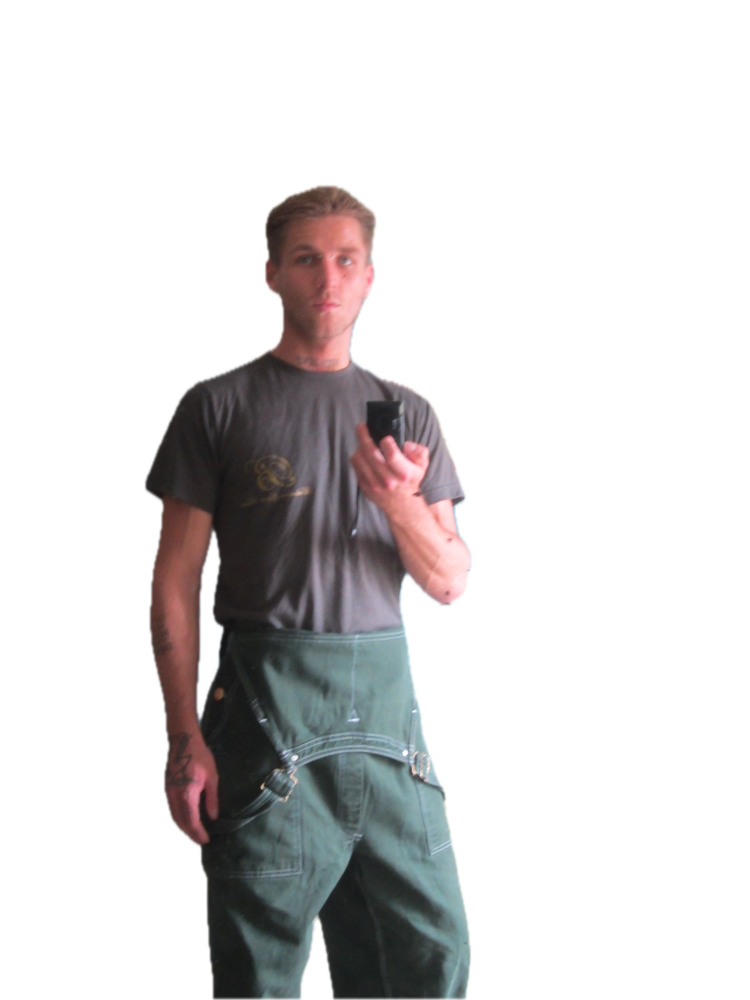

Where I'm going—always figuring it out as I go.

I love when things suddenly click—when patterns show up across different classes, when coding feels creative, when tech problems need artistic thinking.
Working between different fields is where I feel most alive. That's where the interesting stuff happens.
Still learning how to explain complicated ideas simply. Building connections. Always experimenting.
Started with data structures, algorithms, communication theory—all the foundations. Got fascinated by how everything connects, how one idea builds on another.
Joined an accessibility research project studying how digital platforms work (or don't work) for different people. Learned to observe, document, and actually propose solutions that could help.
Teamed up with students from design, psychology, and business to build learning tools that adapt to people instead of forcing everyone into the same mold. Changed how I think about collaboration.
Working on a capstone project that turns emerging tech into actual community tools. Focusing on building responsibly and measuring real impact, not just hitting metrics.
I'm planning on grad school—feels like the right next step to dive deeper into tech, communication, and social impact. Want to build digital experiences that are actually smart, accessible, and meaningful to the people using them.
Short-term, I'm looking for internships in data storytelling and UX research. Places where I can advocate for users and help make better design decisions that actually consider real people.
Long-term? I want to lead teams building tools for education and communities. Stuff that lasts and actually matters.
My North Node is about staying curious, keeping momentum, and always putting people first. That's the direction I'm heading.
Want to collaborate on research, mentorship, or building something that actually helps people?
Let's Connect